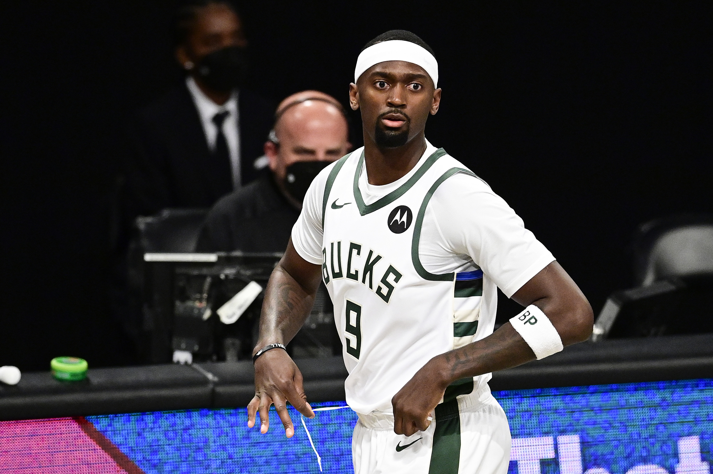
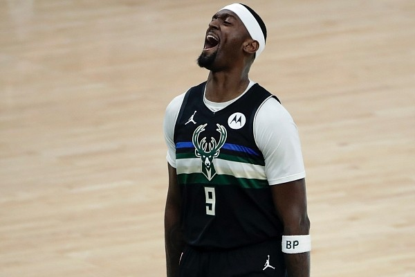
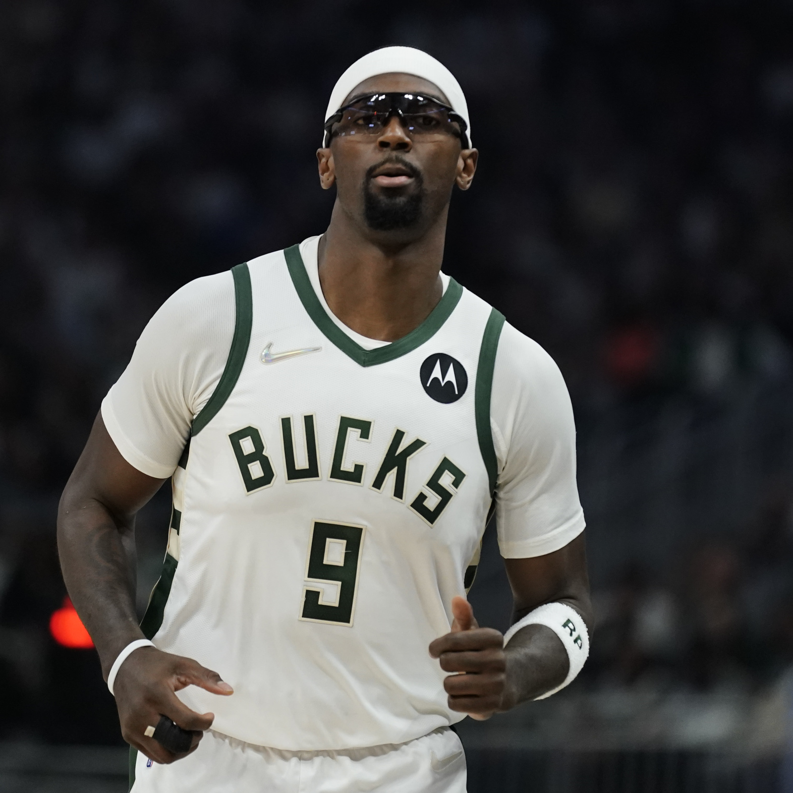
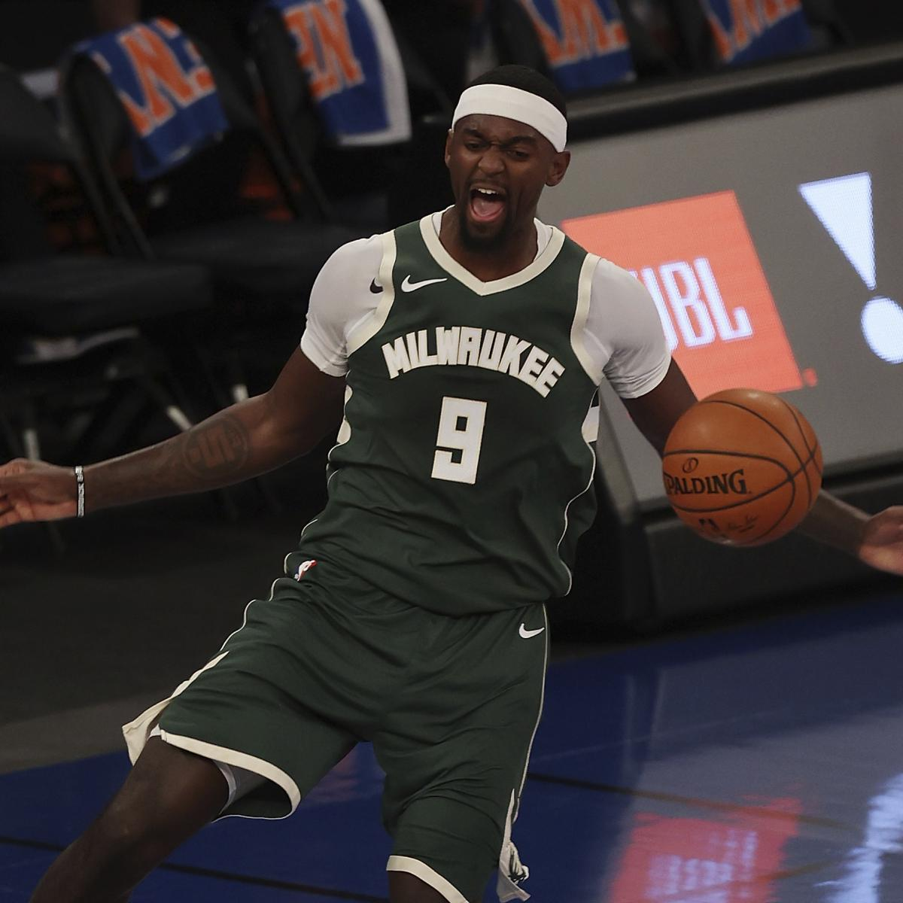
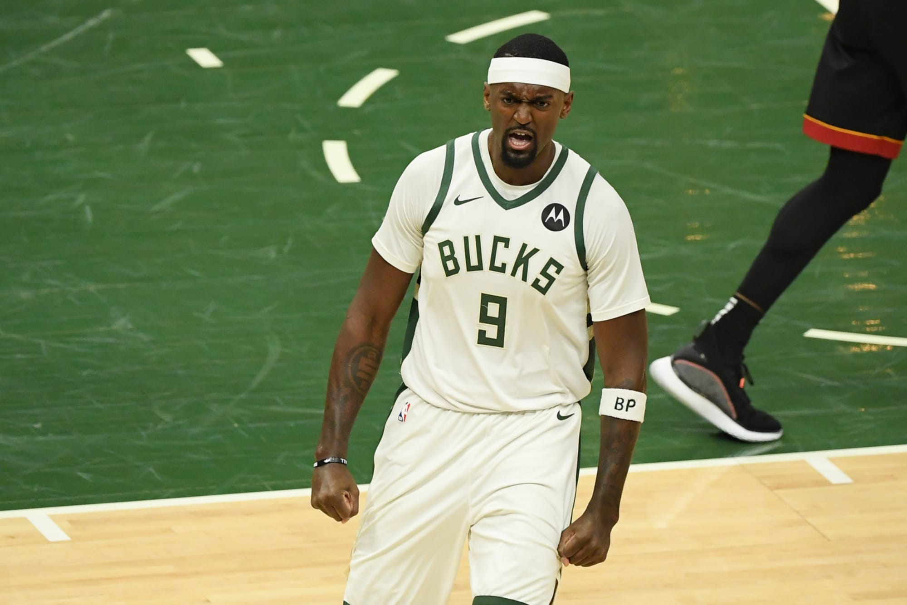

NAME:
Bobby Portis
 



Birthdate:
Bobby Portis Jr. (born February 10, 1995) is an American professional basketball player for the Milwaukee Bucks of the National Basketball Association (NBA)..
Salary:
Bobby Portis signed a 4 year / $48,578,208 contract with the Milwaukee Bucks, including $48,578,208 guaranteed, and an annual average salary of $12,144,552. In ...
Awards:
He was named one of 20 finalists for the John R. Wooden Award for national college player of the year, one of only two players from the SEC. On March 10, 2015 ...
Back